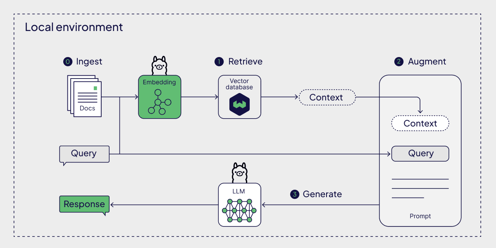

Specially engineered features designed to solve AI factual inaccuracies in health applications.
Unlike generic models, Nutri-RAG limits its knowledge base to peer-reviewed textbooks, ensuring all medical references are verified.
Inputs are routed dynamically. Non-nutrition queries are answered directly or politely rejected, keeping the model highly focused.
Every response displays a mathematical context proof (grounded state, chunk count, and top similarity score) and citations.
How queries are embedded, retrieved, validated, and synthesized end-to-end.

User queries are vectorized locally using the high-performance E5 embeddings model.
Supabase queries the indexed textbook vector space via cosine similarity to fetch the most relevant passages.
LangGraph orchestrates the validation. Answers are generated by matching the context blocks, generating precise citations.
Detailed model architecture and technologies powering the chatbot stack.
| Parameter | Description / Model Specifications |
|---|---|
| Large Language Model (LLM) | gemma3:1b (Ollama Local Runtime) / llama-3.3-70b-versatile (Groq API fallback) |
| Text Embedding Model | jeffh/intfloat-e5-base-v2:f16 (768 dimensions, normalized) |
| Vector Database | Supabase PostgreSQL with pgvector extension (Cosine similarity search) |
| Orchestration & State Management | LangGraph multi-step agent flow (Classification -> Retrieval -> Generation) |
| API Framework & Observability | FastAPI (Python 3.10) integrated with Prometheus fastapi-instrumentator & Grafana dashboard |